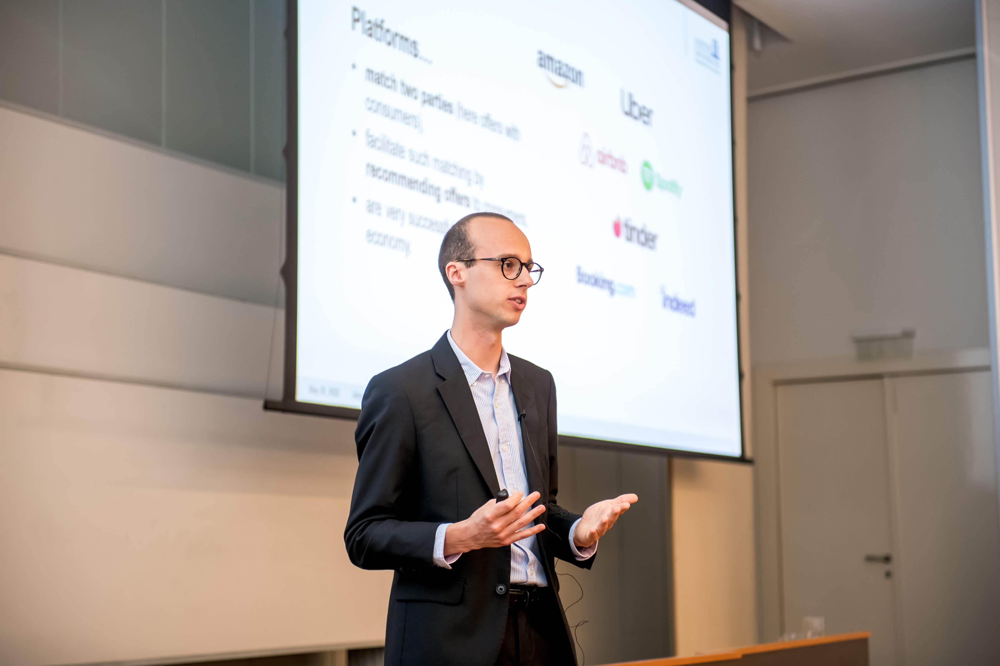

I am a Ph.D. Student and Research Assistant in Quantitative Marketing at Goethe University Frankfurt. My research focuses on the interface between Data Science and Marketing. I like applying modern econometric methods to novel data sources in the digital economy—especially with the R programming language.
In my research project Measuring Fair Competition on Digital Platforms, we develop an approach to test for fair competition on digital platforms. Combining extensive data from Amazon’s search results with high-frequency Amazon product data, we describe a toolkit for regulators and researchers to test for potentially anti-competitive recommendations on digital platforms.
Another research project—Does Media Reporting Matter for Daily Consumption Choices?—combines vast smartphone location data and textual analysis of newspaper articles to assess the impact of media on consumption.
I am an expert in the R programming language and love teaching R to Bachelor’s, Master’s and Ph.D. students, using the language in my research, and even for designing this website.
In my free time, I enjoy preparing the next generation for the digital future as a Member of the Board at TechAcademy e.V., a non-profit organization teaching coding and promoting tech literacy.
On this website, you will find information about my Academic Research and Teaching, my Curriculum Vitae, and my passion project—TechAcademy e.V..
You can contact me via LinkedIn or
Upcoming Talks

You can find out more about my research at the following scheduled conferences. Please check the Research page for details on past conference presentations.
Measuring Fair Competition on Digital Platforms
| Conference | Date | Location |
|---|---|---|
| 20th ZEW Conference on the Economics of Information and Communication Technologies | July 2022 | ZEW — Leibniz Centre for European Economic Research, Mannheim, Germany |
| SALTY 2022 — Quantiative Marketing Conference | September 2022 | WHU — Otto Beisheim School of Management, Düsseldorf, Germany |
Does Media Reporting Matter for Daily Consumption Choices?
| Conference | Date | Location |
|---|---|---|
| VfS Annual Conference 2022 — Big Data in Economics | September 11 – 14, 2022 | University of Basel, Switzerland |